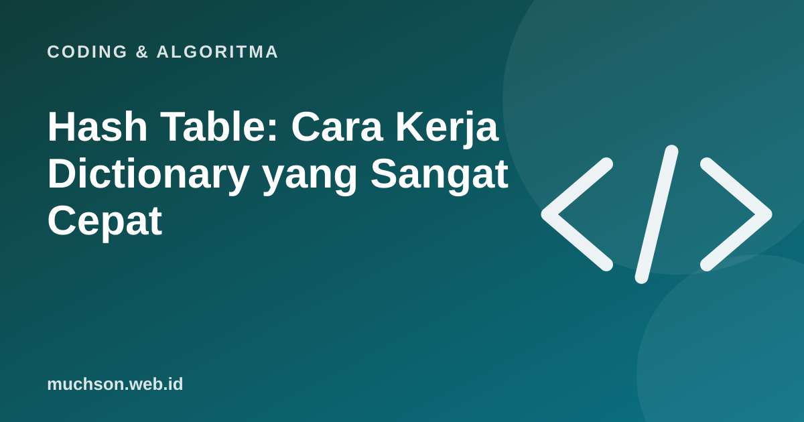

Beranda › Artikel › Coding & Algoritma
Coding & AlgoritmaHash Table: Cara Kerja Dictionary yang Sangat Cepat
Dictionary di Python, objek di JavaScript, dan index di database memakai gagasan yang sama: mengubah kunci menjadi nomor laci, lalu langsung membuka laci itu. Tidak perlu memeriksa satu per satu.

Ide dasarnya
Tabrakan (collision)
Dua kunci berbeda bisa menghasilkan nomor laci yang sama. Itu disebut tabrakan, dan tidak bisa dihindari sepenuhnya. Ada dua pendekatan umum: chaining (laci berisi daftar, seperti di demo) dan open addressing (cari laci kosong terdekat). Hash table yang baik menyebarkan kunci merata dan memperbesar tabel saat mulai penuh.
Di Python
harga = {"apel": 12000, "jeruk": 15000}
harga["mangga"] = 20000 # simpan: O(1) rata-rata
print(harga["jeruk"]) # cari: O(1) rata-rata
print("pisang" in harga) # cek keberadaan kunci: FalseAturan kunci
Kunci dictionary harus bersifat "dapat di-hash" dan tidak berubah (misalnya string, angka, tuple). List tidak bisa dijadikan kunci karena isinya bisa berubah.
Tanya jawab
Apakah hash table selalu O(1)?
Rata-rata ya. Pada kasus terburuk dengan banyak tabrakan bisa menjadi O(n), tetapi implementasi modern menghindarinya.
Apakah hash sama dengan enkripsi?
Bukan. Hash untuk pencarian cepat atau sidik jari data. Enkripsi untuk merahasiakan data dan bisa dibuka kembali.
Apakah urutan dictionary dijamin?
Pada Python 3.7 ke atas, urutan penyisipan dipertahankan. Itu sifat bahasa, bukan sifat umum hash table.